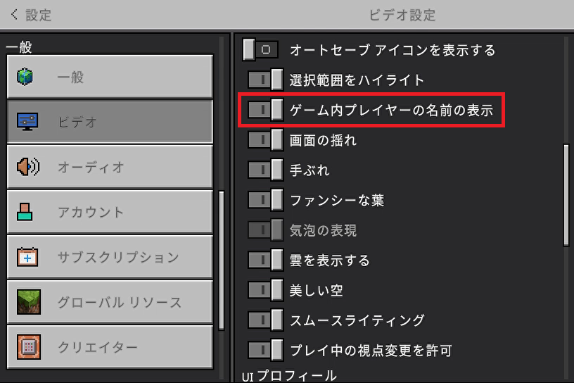

【設定ファイル】
はじめに
ここでは本環境に依存しているマインクラフト専用の設定ファイルについて記載しています。
それ以外の設定ファイルの内容についてはフレームワークのデモ環境と同じですので以下のページをご覧ください。
▶システム設定ファイル
▶デモの設定ファイル
※設定ファイルはプロジェクトルートの
それ以外の設定ファイルの内容についてはフレームワークのデモ環境と同じですので以下のページをご覧ください。
▶システム設定ファイル
▶デモの設定ファイル
※設定ファイルはプロジェクトルートの
settingディレクトリに格納しています。【minecraft.php】
minecraft.php（マインクラフト用全体設定ファイル）
サブスクライブイベントの処理内容については▶マインクラフトの通信仕様（マインクラフトへの送信データ）をご覧ください。
return [
/**
* @var array 設定するサブスクライブタイプ（複数指定可能）
*/
'subscribe_types' =>
[
'PlayerMessage',
'ItemUsed',
'PlayerTravelled'
],
/**
* @var array 二段ジャンプの設定
*/
'double_jump' =>
[
/**
* @var bool 無効化フラグ（true:無効 or false:有効）
*/
'ignore' => false,
/**
* @var float ジャンプのみなし移動量（ｍ）
*/
'meter' => 1.21,
/**
* @var float 二段ジャンプのインターバル（秒）
*/
'interval' => 2.3
],
/**
* @var array 座れる階段ブロック（複数指定可能）
*/
'stairs_ids' =>
[
'stone_stairs', // 丸石
'oak_stairs', // オーク
'cherry_stairs', // サクラ
'brick_stairs', // レンガ
'quartz_stairs' // クォーツ
],
/**
* @var array ファンネル設定
*/
'funnel_setting' =>
[
/**
* ":name"をプレースホルダとしてマインクラフトユーザー名が設定される
*
* @var string ファンネル名のフォーマット
*/
'name_format' => 'ファンネル（:name）',
/**
* @var int 発射の上限
*/
'shoot_limit' => 6,
/**
* @var int 発射の上限（Ｎジャマー搭載時）
*/
'njammer_limit' => 12,
/**
* @var array メッセージリスト
*/
'messages' =>
[
/**
* @var string 発射の上限に達した時のメッセージ
*/
'shoot_limit' => 'これ以上発射できません',
/**
* @var string ファンネルの回収に成功した時のメッセージ
*/
'collect_success' => 'ファンネルを回収しました',
/**
* @var string 回収できるファンネルが存在しない時のメッセージ
*/
'collect_fail' => '回収できるファンネルはありません'
]
]
];
subscribe_types
サブスクライブイベントの種類を指定します。現状は上記の３つだけ登録していますが配列形式で複数指定可能です。サブスクライブイベントの処理内容については▶マインクラフトの通信仕様（マインクラフトへの送信データ）をご覧ください。
double_jump
二段ジャンプの各種設定。- ignore
-
二段ジャンプの有効／無効をtrue（無効） or false（有効）で指定。
- meter
-
みなし移動量をメートル（ｍ）で指定。
二段ジャンプを開始するとみなす移動量で、例えば垂直に飛べば移動量は少ないですが弧を描くように飛ぶと移動量は増えます。
- interval
-
一度二段ジャンプをみなした時点から再度二段ジャンプをみなすまでのインターバルです。
stairs_ids
座れるブロックのIDを指定します。任意のブロックを指定できます。funnel_setting
ファンネルの各種設定。- name_format
-
ファンネル名のフォーマット（":name"をプレースホルダとしてマインクラフトユーザー名が設定される）。
ファンネルは小さなエンティティで視認性が悪い（夜間や暗闇など）事もあるので、以下の設定で名前表示を有効にしておく事によって、ここで設定したフォーマットの名前が表示されます。

※プレースホルダで所有者の名前を含める事もできるので、他のプレイヤーのものと区別する事も可能です。
- shoot_limit
-
発射の上限を設定します。
- njammer_limit
-
Ｎジャマー搭載装備を身に着けている時の発射の上限を設定します。
- messages
-
ウィスパーを通してサーバーサイドから通知されるメッセージリスト。
- shoot_limit
- 発射の上限に達した時のメッセージを設定する。
- collect_success
- ファンネルの回収に成功した時のメッセージを設定する。
- collect_fail
- 回収できるファンネルが存在しない時のメッセージを設定する。
【shop.php】
shop.php（ネットショップ用設定ファイル）
これを最初に引き渡しておく事で処理中の通信量を減らし、かつショップ側のハードコーディングを減らします。
return [
/**
* @var array 購入可能商品リスト
*/
'buy_list' =>
[
'<アイテムID>' =>
[
'id' => '<アイテムID>',
'type' => '<アイテムタイプ>',
'icon' => '<アイコン画像のパス>',
'name' => '<アイテム名>',
'price' => <購入価格>
],
・
・
・
],
/**
* @var array 売却可能商品リスト
*/
'sell_list' =>
[
'<アイテムID>' =>
[
'id' => '<アイテムID>',
'type' => '<アイテムタイプ>',
'icon' => '<アイコン画像のパス>',
'name' => '<アイテム名>',
'price' => <売却価格>
],
・
・
・
],
/**
* @var array 入店時オプションデータ
*/
'opts' =>
[
'unknown_user' => '<指定ユーザーが見つからなかった時のメッセージ>',
'other_than_minecraft' => '<指定ユーザーがマインクラフトユーザーではなかった時のメッセージ>',
'other_than_survival' => '<マインクラフト側がサバイバルモードではなかった時のメッセージ>',
'admin_user' => '<管理者ユーザー名>',
'exit_comment' => '<退店時のメッセージ>',
'server_close_comment' => '<サーバーからの切断時のメッセージ>',
'forced_close_comment' => '<強制切断時のメッセージ>',
'unexpected_close_comment' => '<予期しない切断時のメッセージ>',
'error_comment' => '<エラー発生時のメッセージ>',
'no_user_comment' => '<ユーザー名未入力時のメッセージ>',
'welcome_comment' => '<ウェルカムメッセージ>',
'wait_comment' => '<通信待ちのメッセージ>',
'paying_comment' => '<購入処理中のメッセージ>',
'thankyou_comment' => '<サンキューメッセージ>',
'releasing_comment' => '<売却品返却中のメッセージ>',
'released_comment' => '<売却品返却完了時のメッセージ>',
'selling_comment' => '<売却中のメッセージ>',
'sold_comment' => '<売却完了時のメッセージ>'
],
/**
* @var string 金額データのスコアボードオブジェクト名
*/
'wallet-object-name' => '<オブジェクト名>'
];
buy_list
購入可能アイテムの一覧を定義します。- id
-
ネームスペースを省いたアイテムIDを指定します。
- type
-
マインクラフト側へアイテムを付与するためのコマンドタイプを指定します。現在は
loot/customizeのみ。
loot:LootTableで付与するタイプ。idにはjsonファイル名を指定する。
loot以外:giveコマンドで付与するタイプ。ネームスペースを指定する。
- icon
-
アイテムアイコン画像の相対パスを指定します。
- name
-
アイテムの表示名を指定します。
- price
-
アイテムの購入価格を指定します。
sell_list
売却可能アイテムの一覧を定義します。- id
-
ネームスペースを省いたアイテムIDを指定します。
- type
-
マインクラフト側へアイテムを返却する際のコマンドタイプを指定します。現在は
loot/customizeのみ。
loot:LootTableで付与するタイプ。idにはjsonファイル名を指定する。
loot以外:giveコマンドで付与するタイプ。ネームスペースを指定する。
- icon
-
アイテムアイコン画像の相対パスを指定します。
- name
-
アイテムの表示名を指定します。
- price
-
アイテムの売却価格を指定します。
opts
各状況に合わせたメッセージ定義のデータを入店時にショップ側へ引き渡します。これを最初に引き渡しておく事で処理中の通信量を減らし、かつショップ側のハードコーディングを減らします。